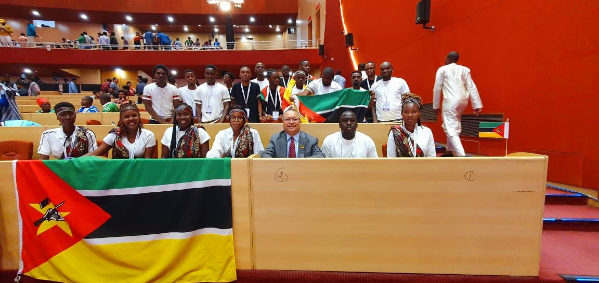
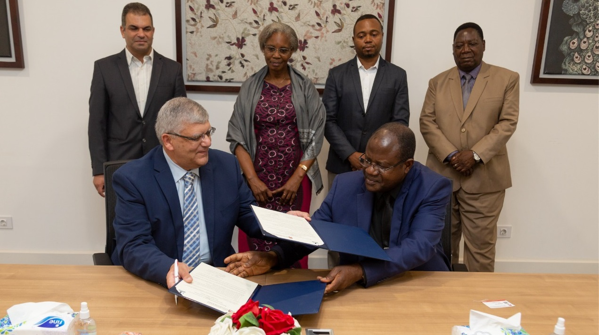
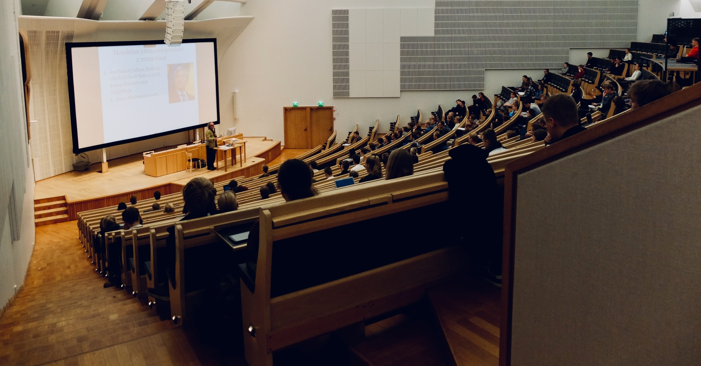

Faculdade de Ciências e Tecnologia
Pagina Inicial
Sobre nós
Quem somos?
Missão, Visão e Valores
Estrutura orgânica
Regulamento
Normas e Regulamentos
Contacto
Cursos
Licenciatura
Engenharia em Tecnologias e Sistemas de Informação
Curta duração
Investigação
Trabalhos Científicos
Projectos desenvolvidos
Estudantes
Admissão
Estagiários
Núcleo dos estudantes
Noticias
Eventos
Repositório
Calendário de defesas
Trabalhos de conclusão do curso
Monografias
1 / 3

Estudantes da Faculdade de Ciências e Tecnologia na Índia entre os dias 22 à 25 de Novembro de 2022.
Clique aqui para ler mais
2 / 3

Magnífico Reitor da UJC visita Egypt-Japan University of Science and echnology (E-JUST).
Clique aqui para ler mais
3 / 3

Resultados dos exames de admissão disponíveis.
Clique aqui para ver os resultados.
NOTICIAS
Estudantes da Faculdade de Ciências e Tecnologia na Índia entre os dias 22 à 25 de Novembro de 2022.
Clique aqui para saber mais.
Magnífico Reitor da UJC visita Egypt-Japan University of Science and echnology (E-JUST).
Clique aqui para saber mais.
As aulas iniciam no dia 6 de Fevereiro de 2023.
Clique aqui aceder ao calendário académico.